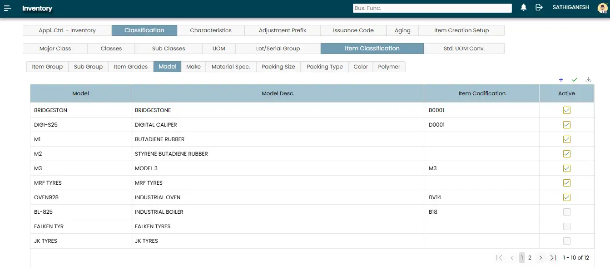

<div data-category="Inventory Control" data-title="Model" data-updated="January 27, 2026" data-contributors="RoadmapIT" data-breadcrumb="Home,Inventory Control,Model">
  <div class="page-content">
    <p>An item model is a set of parameters that defines how an item is handled and controlled in terms of inventory transactions, such as receipt, issue, and consumption.</p>
    <p>The Item Model and Model description is defined in this screen. The Model cannot be modified or deleted when there exist child records</p>
    <h5>Navigation path:</h5>
    <p class="fs-6">Supply Chain Management \ Inventory \ Setup \ Setup - Inventory</p>
    
    <ul style="list-style-type: none; align-content: center">
      <li class="mouse-icon">
        Click
        <i class="bi bi-plus fs-4 mx-2 text-primary"></i>
        button to create a Model
      </li>
      <li class="mouse-icon">Enter the Model</li>
      <li class="mouse-icon">Enter the Model Desc.</li>
      <li class="mouse-icon">Enter the Item Codification</li>
      <li class="mouse-icon">Enable the Active Flag</li>
      <li class="mouse-icon">
        Click
        <i class="bi bi-check-lg fs-4 mx-1 text-success"></i>
        to Save the Model.
      </li>
    </ul>
  </div>
</div>
